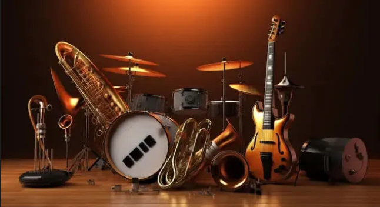
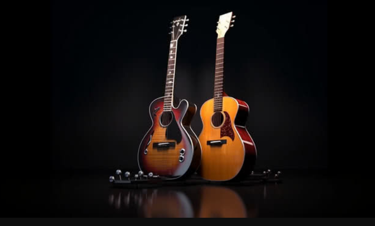
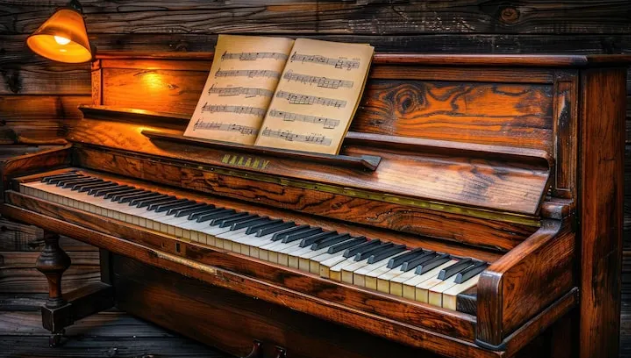
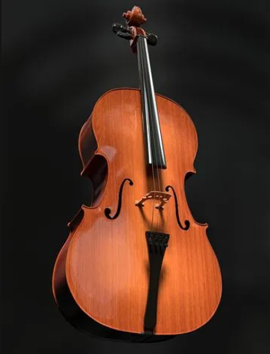

PASEATE ENTRE NOTAS Y CUERDAS.

Este es el universo mágico de seres que fluyendo en las ondas del tiempo, se entregaron al arte de la música, a la pasión de las aves que cantan trás las rejas de su jaula. Pero nunca olvidaron los vientos, ni las cuerdas que vibran en su mente, entonando una canción silenciosa en los vacíos del corazón.

Aprender un instrumento
Al principio, el instrumento parece un enemigo: los dedos no responden, las notas suenan torcidas y la
paciencia se agota. Pero un día, sin avisar, una frase sale limpia. Y después otra. Aprender música enseña
que el progreso es silencioso y se construye con constancia, diez minutos hoy y diez mañana. Lo más bonito
es que nunca se termina de aprender.

En esta página podrás encontrar gran varidad de instrumentos, para que elijas el de tu preferencia, indaga, sumergete en todas las opciones y descuentos. Te brindaremos la mejor orientación posible, así que, contactatos y te daremos la mejor atención.
El poder de la músicaLa música es el único idioma que no necesita traducción. Una melodía puede devolvernos a un verano de la infancia, consolar una despedida o darnos el empujón justo para correr un kilómetro más. No explica lo que sentimos: lo hace visible. Por eso, en cualquier cultura y en cualquier época, las personas han cantado, tocado y bailado juntas.

La música a lo largo de la historia Desde las flautas de hueso de hace más de cuarenta mil años hasta las listas de reproducción de hoy, la música ha acompañado a la humanidad en cada etapa. Los cantos gregorianos llenaron catedrales, el barroco le dio estructura a la emoción, el jazz inventó la libertad del improviso y el rock convirtió la rebeldía en himno. Cada estilo nació de su tiempo y, a su vez, cambió el modo en que ese tiempo se entendía a sí mismo.
